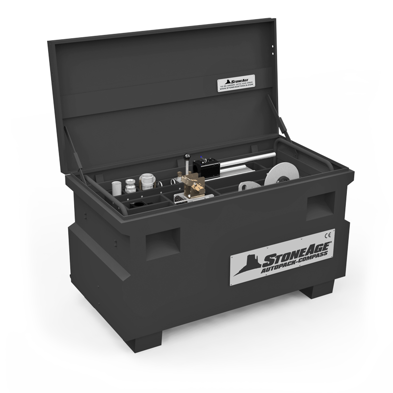

Package it with AutoPacks!
The AutoPack Compass combines the Compass Positioner and the Confined Space Kit with a ProDrive single lance tractor in a protective job box, making this an affordable and completely self-contained solution for exchanger or confined space tube cleaning applications.
Offered in various customizable packages, the AutoPack Compass unites the equipment formerly known as the ProP-DBP and ProPositioner to deliver hands-free tube cleaning while minimizing the occurrence of confined space entry.
Click above to view details